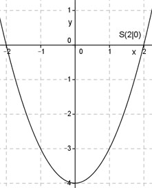

Aufgabe 14 Wie groß ist c, wenn eine Parabel der Form y = x2 + c durch den Punkt (2|0) geht? Punkt (2|0) bedeutet, x = 2 und y = 0. In y = x2 + c eingesetzt: 0 = 4 + c | -4 c = -4 Die gesuchte Funktion lautet: y = x2 - 4 Es ist eine nach oben geöffnete Normalparabel (Zahl vor dem x2 ist positiv und gleich 1). Sie ist symmetrisch zur y-Achse und hat ihren Scheitelpunkt, den tiefsten Punkt, bei S(0|-4). 